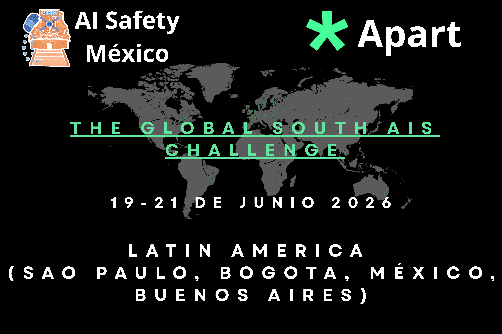
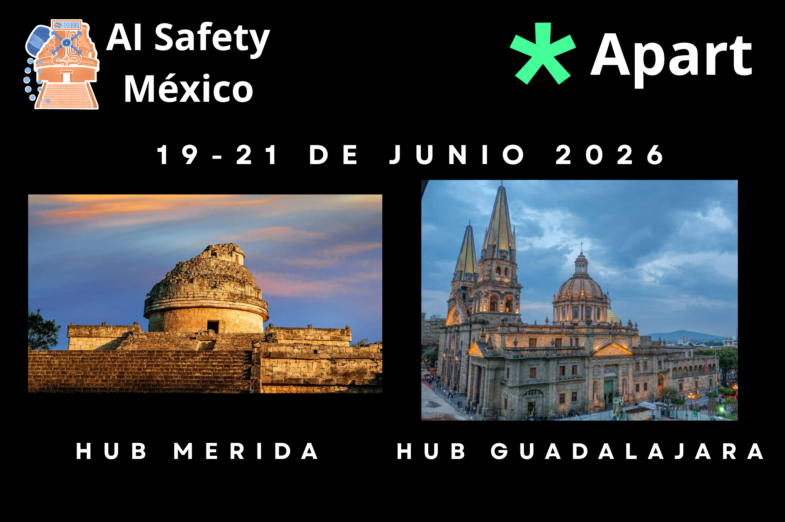

Organizado por Apart Research y AI Safety México como partner en México, esta iniciativa descentraliza la gobernanza y la investigación técnica en IA, elevando la experiencia local al escenario global.
Únete al Global South AI Safety Hackathon como juez, mentor, speaker, voluntario o sponsor, y ayuda a construir el futuro de una IA responsable en América Latina.
El Global South AI Safety Hackathon reúne a investigadores, builders y perfiles de policy de América Latina, África y Asia para desarrollar soluciones prácticas en seguridad de IA, arraigadas en el contexto regional.

La seguridad en IA no puede resolverse desde una sola región. El Sur Global aporta contexto, experiencia y perspectivas irremplazables a esta conversación.
Mentorea y evalúa a la próxima generación de investigadores y builders en AI Safety de regiones subrepresentadas.
Apoya soluciones aterrizadas en desafíos regionales: gobernanza de IA, seguridad en IA, IA responsable y AI Safety técnico en el Sur Global.
Ayuda a mover la conversación global sobre AI Safety más allá de unas pocas instituciones hacia un ecosistema verdaderamente internacional.
Conecta con investigadores, founders y policymakers de tres continentes y gana visibilidad en una iniciativa internacional en crecimiento.
Evalúa proyectos y brinda retroalimentación experta. Ideal para investigadores, engineers y profesionales de policy con experiencia en AI Safety.
Guía equipos durante 48 horas de construcción intensiva. Comparte conocimiento en AI Safety técnico, policy o gobernanza.
Imparte charlas cortas o workshops sobre temas de AI Safety. Ayuda a ampliar las herramientas conceptuales y prácticas de los participantes.
Apoya coordinación, logística y experiencia de participantes en los hubs remotos y presenciales de Mérida y Guadalajara.
Financia premios, sedes o desarrollo de ecosistema. Obtén visibilidad destacada en una iniciativa internacional creíble de AI Safety.

Los mejores equipos de todos los hubs globales serán invitados al Apart Fellowship: un pipeline para talento emergente en AI Safety con mentoría, oportunidades de investigación y apoyo profesional.
Únete a construir sistemas de IA más seguros y contextualizados apoyando a la próxima generación de investigadores, builders y policymakers en tres continentes.